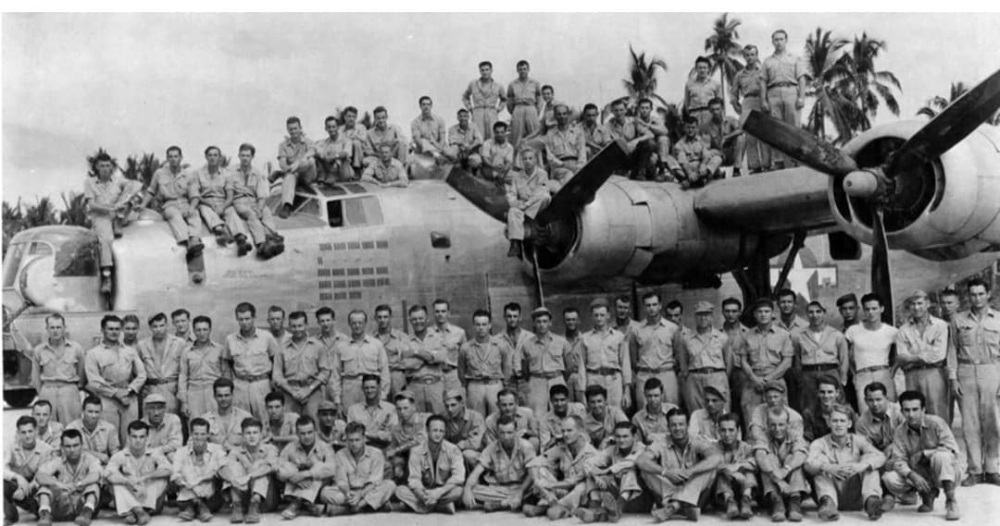
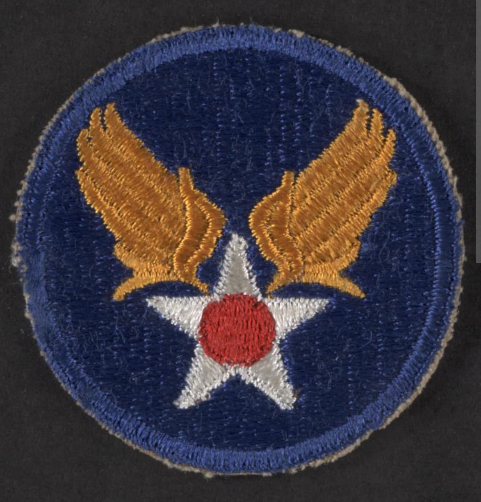
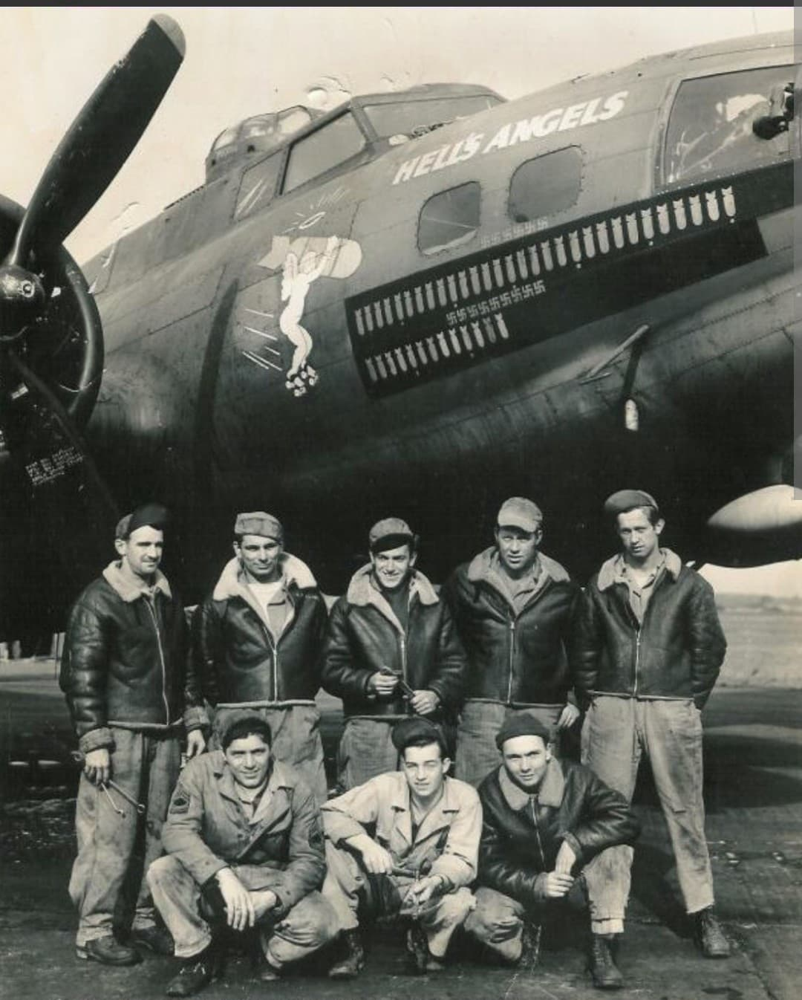

La conquête des cieux : de l'offensive de bombardement stratégique sur le Reich au soutien tactique des troupes alliées

Branche aérienne de l'armée de terre américaine durant le conflit, les US Army Air Forces (USAAF) se sont imposées comme la force aérienne la plus puissante, la plus vaste et la mieux équipée de l'histoire.
Placées sous le commandement du général **Henry H. "Hap" Arnold**, les USAAF ont joué un rôle décisif dans l'anéantissement du potentiel industriel du IIIe Reich, la destruction de la Luftwaffe et l'appui rapproché des opérations terrestres du Débarquement de Normandie jusqu'à la victoire finale en mai 1945.
Créées en juin 1941 par réorganisation de l'US Army Air Corps pour faire face aux exigences d'une guerre moderne globale, les USAAF connaissent une expansion fulgurante, passant de 150 000 hommes à plus de 2,4 millions d'aviateurs et de techniciens en 1944.
Son insigne célèbre se compose d'un disque ultramarin portant l'**étoile blanche à centre rouge** encadrée par deux **ailes stylisées dorées** orientées vers le haut. La cocarde nationale à bandes blanches et bordures bleues est ensuite apposée sur le fuselage et les ailes de tous ses appareils (B-17, B-24, P-47, P-51, C-47).

Basée au Royaume-Uni, la mythique **8th Air Force** (les « Mighty Eighth ») mène à partir de 1942 l'offensive stratégique de jour contre le cœur industriel et militaire de l'Allemagne nazie.
Aux commandes des bombardiers lourds B-17 *Flying Fortress* et B-24 *Liberator*, les équipages américains affrontent une Flak meurtrière et la chasse allemande lors de raids mythiques comme Schweinfurt, Ratisbonne ou l'opération *Big Week* en février 1944. L'arrivée des chasseurs à long rayon d'action P-51 *Mustang* permet d'escorter les bombardiers jusqu'à Berlin et de briser définitivement l'épine dorsale de la Luftwaffe.

Consacrée à l'aviation tactique, la **9th Air Force** déploie ses chasseurs-bombardiers P-47 *Thunderbolt* et P-38 *Lightning* pour pilonner les voies ferrées, les ponts et les colonnes blindées allemandes en Normandie (Opération Cobra) et durant la bataille des Ardennes.
En parallèle, les avions de transport C-47 *Skytrain* du *IX Troop Carrier Command* larguent les milliers de parachutistes des 82nd et 101st Airborne Divisions lors du D-Day, de l'Opération Market Garden aux Pays-Bas et lors du franchissement du Rhin (Opération Varsity).
L'engagement des USAAF en Europe et dans le monde s'est payé au prix fort : plus de **88 000 aviateurs sont mort au combat** ou ont été portés disparus, enregistrant l'un des taux de pertes les plus élevés de toutes les armées alliées.
Trente-six aviateurs de l'USAAF ont reçu la prestigieuse *Medal of Honor*. L'immense contribution des USAAF à la victoire alliée a conduit à la création de l'**US Air Force (USAF)** en tant que branche armée totalement indépendante en septembre 1947.
Page du Musée HOP WW2 – Section Unités & Divisions Célèbres